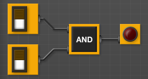
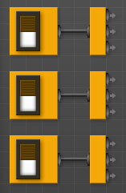
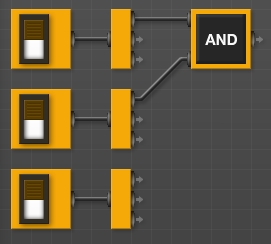
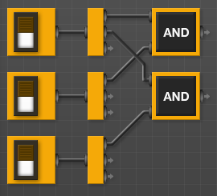
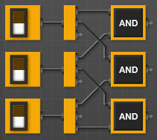
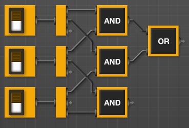
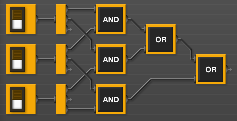

Logical Expressions
Last week, we introduced decisions (if-statements). These relied on the "test" which was an expression that evaluated to true or false.
We can build up more complicated logical expressions using built-in operators, and, or, and not. A standard way to summaries these operators is with truth tables. A truth table lists all the possible inputs and gives the output for each combination.
For example, here is the truth table for
the and operator:
| in1 | in2 | in1 and in2 |
| True | True | True |
| False | True | False |
| True | False | False |
| False | False | False |
It lists all the possible combinations of values for the inputs, in1 and in2 and what and would give as output. For example, if in1 is True and in2 is False, the value of
in1 and in2 can be read off the last column of the third line of the truth table as False.
Similarly here is the truth table for or:
| in1 | in2 | in1 or in2 |
| True | True | True |
| False | True | True |
| True | False | True |
| False | False | False |
For example, if in1 is True and in2 is False, the value of
in1 or in2 can be read off the last column of the third line of the truth table as True.
The not operator changes the input from false to true, or true to false. That is, not True is false and not False is true. We can write this in the table format above:
| in1 | not in1 |
| True | False |
| False | True |
These logical operators are useful building complex tests for our if-statements (as well as other control structures that will be introduced later).
Snow Pack in California
As an example of logical expressions, we will use them to estimate the snow pack level in California over the last drought using satellite imagery.
Landsat Satellite Program is a joint program of USGS and NASA that has provided continuous images of the earth since 1972. The data is publicly available through the USGS-EROS site and has been invaluable in mapping changes in the earth. Today, we will use data images from the USGS remote sensing gallery:
http://remotesensing.usgs.gov/gallery/
The snow pack in the Sierra Nevada mountains provide almost a third of the water used by California. As a first estimate of snow pack, the number of pixels that are (nearly) white are counted.
How much change has their been in the Sierra Nevada snowpack during the past drought in California? Here are images from before and during the worst years of the drought:
How much snow is there? We will use the number of pixels that are nearly white as an estimate of the snow. We can add in a new variable, countSnow to keep track of each time a pixel is nearly white.
Here's an outline of our program:
- Import the libraries to manipulate and display arrays.
- Read in the California image and store in the variable, ca
- Create a new variable, countSnow, to keep track of the number of pixels that are nearly white.
- For each element in elevations,
- If the pixel is nearly white
-
countSnow = countSnow + 1
- Print out countSnow.
When is a pixel white? It's when the red, green, and blue values are close to 100%. In code, we would have:
t = 0.75 #Threshold for almost white-- can adjust between 0.0 and 1.0
...
for i in range(ca.shape[0]):
for j in range(ca.shape[1]):
if (ca[i,j,0] > t) and (ca[i,j,1] > t) and (ca[i,j,2] > t):
countSnow = countSnow + 1
Let's translate that into Python. Open up a new IDLE window and copy over the outline. Using the image programs from
last lab as a template, fill in as much as possible before looking at the program below:
#Name: CSci 127 Teaching Staff
#Date: Fall 2017
#This program loads an image, counts the number of pixels that are
# nearly white as an estimate for snow pack.
#Import the packages for images and arrays:
import matplotlib.pyplot as plt
import numpy as np
ca = plt.imread('CaliforniaDrought_02232011_md.png') #Read in image
countSnow = 0 #Number of pixels that are almost white
t = 0.75 #Threshold for almost white-- can adjust between 0.0 and 1.0
#For every pixel:
for i in range(ca.shape[0]):
for j in range(ca.shape[1]):
#Check if red, green, and blue are > t:
if (ca[i,j,0] > t) and (ca[i,j,1] > t) and (ca[i,j,2] > t):
countSnow = countSnow + 1
print("Snow count is", countSnow)
This program assumes that you have downloaded and saved CaliforniaDrought_02232011_md.png
to the same directory as your program.
How can you modify your program to let the user specify the input file?
See
Programming Problem List.
Logical Circuits
The logical expressions above are useful not only in designing decisions and selecting data in Python, but the same concept underlies much of the hardware of computers. The and, or, and not can all be simulated in hardware via logic gates. These gates take inputs (usually 0 or 1) and output a value, based on the logical operator it is simulating.
Here is a simulator for circuits. Let's see an and gate in action:

(click to launch new window with circuit builder)
- Try toggling (clicking on) the switches on the left of the canvas. What happens?
- When does the light turn red?
- When does the light turn off?
Try making a circuit with an or gate:
From the left hand menu, pull over two switches (the little boxes with a toggle switch on them) to the canvas..
Scroll down to the next menu, and choose "OR" from the Logic ports and
drag it over to canvas.
Each switch has an output (little circle with an outward pointing arrow). Click on the output of the first switch and link to the inward pointing arrow of the OR gate.
Repeat with the other switch to connect it to the other input of the AND gate.
Scroll down to the bottom of the left hand menu, and choose the output
with the single red circle.
Connect the output of the OR to the input of the red output gate.
Toggle (click) on the switches. What happens to the red output light?
What is different between the behavior of the or and and gates?
Majority of 3 Inputs
Now, let's build a circuit, or collection of gates, that takes
majority of 3 inputs, called in1, in2, in3:
- If two or more of the inputs are True, then your expression should evaluate to True.
- Otherwise (two or more of the inputs are False), then your expression should evaluate to False.
Here's a window for building your circuit. Directions (with images) are below:
Build your circuit as you read the instructions below:
- The question asks for 3 inputs-- let's use switches since those are easy to test out whether it works.
- We are going to need to check if any pair of inputs is True. An easy way to do this is to check that:
- in1 and in2 are both true, or
- in1 and in3 are both true, or
- in3 and in3 are both true
An easy way to do this is to "split the signal" of each input, so, we can use it in multiple places.
Go to the "Extras" menu (may need to scroll down) and pick up 3 splitters (has 1 input, 3 outputs) and hook one up to each of the inputs:
.
- We'll build up our circuits in stages:
- To check that in1 and in2 are both true, hook both of them up to an and gate (in the Logic ports menu).
- To check that in1 and in3 are both true, hook both of them up to an and gate (in the Logic ports menu).
- To check that in2 and in3 are both true, hook both of them up to an and gate (in the Logic ports menu).
 

You can check the wiring by toggling any two switches-- when you toggle the first and the second, the wires going to the first and gate should be highlighted in green. Check the first and the third, and second and third as well, to make sure all is connected right.
- We have each of the three things done in our to-do list above. The list is connected by "or", so, we need to do the same with our outputs:
 .
- And lastly, let's add an output light that will glow when true:

Test the circuit you just built:
- if two or more switches are on, is the output light on?
- if two or more switches are off, is the output light off?
Adjust your circuit until it only lights up when two switches are on.
Translating Logical Circuits to Logical Expressions
How do
we represent this as a logical expression? Let's work backwards from the output light:
Our last gate is an or, so we will write down an or
(lotsOfStuff1) or (lotsOfStuff2)
We'll use parenthesis to keep things neat. Now, let's look at the left hand side (lotsOfStuff1). It also has an or, so we can write it down:
((lotsOfStuff3) or (lotsOfStuff4)) or (lotsOfStuff2)
Let's keep refining our expressions (lotsOfStuff3) has an and
at the top, so, we will replace it with:
(((lotsOfStuff5) and (lotsOfStuff6)) or (lotsOfStuff4)) or (lotsOfStuff2)
(lotsOfStuff5) is just a wire back to the first input, so, we can
write that instead:
((in1 and (lotsOfStuff6)) or (lotsOfStuff4)) or (lotsOfStuff2)
and similarly, (lotsOfStuff6) is just a wire back to the second input, so, we can write that instead:
((in1 and in2) or (lotsOfStuff4)) or (lotsOfStuff2)
That looks better! If look at lotsOfStuff4, we see an and gate with wires back to the first and third inputs:
((in1 and in2) or (in1 and in3)) or (lotsOfStuff2)
Similarly, we can replace lotsOfStuff2 with:
((in1 and in2) or (in1 and in3)) or (in2 and in3)
Save this line to a text file (you can use any text editor, just make sure to save it as plain text, with no formatting):
#Name: Your name here
#Date: 16 October 2017
#Program #23: Computes the majority of 3 inputs
out = ((in1 and in2) or (in1 and in3)) or (in2 and in3)
(your expression, preceded by out = ).
For our logical expressions homework, you submit just a file with the logical expressions. The grading script evaluates the expression, testing it with different inputs. See Programming Problem List.
More Exotic Gates
In addition the and, or, and not gates, there are several other standard gates. For each, we can build a circuit using just and, or, and not gates that gives the same output.
What does a nand gate do?

Toggle the inputs to figure out what the gate does.
Now, build a circuit that has the same behavior as a nand gate (i.e. for the same inputs, both give identical output) using only and, or, and not gates.
When you have the answer, label your inputs in1 and in2, save the answer in a file:
out = ...
(where ... is replaced by your answer). See Programming Problem List.
More on the Command Line Interface: Absolute Paths
Last lab, we introduced relative paths for navigating the directories via the shell. Relative paths (e.g. cd ../) used the current location when executing. We can also use absolute paths that are independent of your location. For example,
cd /usr/bin
pwd
ls
will change your working directory to one of the machine's standard
bin directories which is filled with programs, or binaries. The next two commands show the path to the working directory and list its contents. These binaries are in a central location to make it easier to find and use.
Since it is nice to be able to return to your default, or home directory, there is a built-in short-cut for home (~). Try
cd ~
pwd
ls
The first command will return you to your home directory, no matter where you started.
Next lab, we will introduce scripts, or files of shell commands, that we can execute at the command line.

{kind=link}
{kind=link}